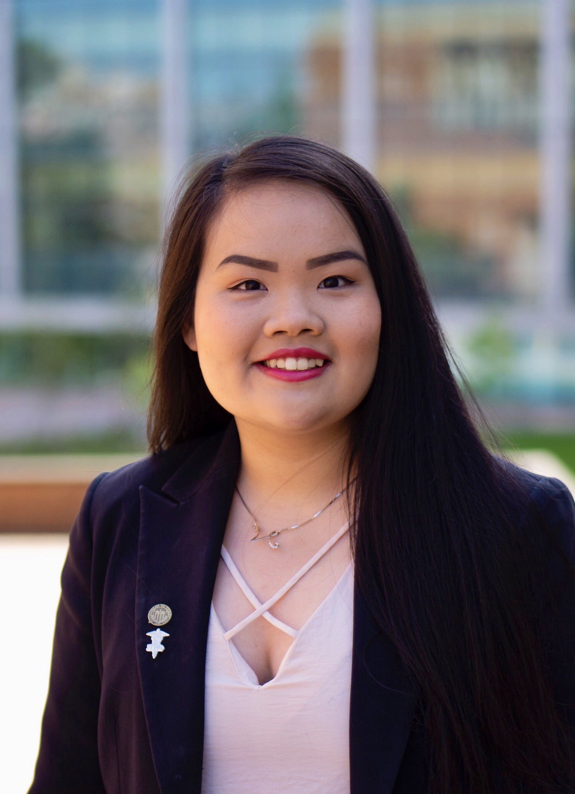

Nhu H. Nguyen (She/Her/Hers)

Contact Information
- Email Address: nnguyenh@uw.edu
- Phone Number: (206) 536-9119
- LinkedIn:
Skills
- Language skills: Fluent in English (bilingual proficiency) and Vietnamese (native proficiency)
- Computer skills: Proficient in Microsoft Office and Google Workspace, research search engines, basic graphic design applications
- Public health-related skills: Experienced in non-profit, grant writing, epidemiological data collection & analysis, study evaluation
Education
- Bachelor of Arts in Public Health-Global Health
- Bachelor of Science in Biology
- Relevant Coursework: Research Methods in Public Health, History and Practice of Public Health, Science and Public Health, Public Health Capstone, Introduction to Epidemiology, Introduction to Genetic Epidemiology, Biostatistics for the Health Sciences, The Health of Populations, Structural Racism and Public Health, Introduction to Medical Anthropology and Global Health, Tobacco-Related Health Disparities and Social Justice, Rural Health Care Issues, Geographical Patterns of Health and Disease, Introduction to Racial and Ethnic Health Disparities in the United States
- Associate of Arts
- Running Start Program
Public Health Experience
Washington State Co-Lead & Volunteer, TeleHealth Access for Seniors (June 2020 - Present)
- Lead team to fundraise $14,000+ and collect community donations to donate 263 video-enabled devices for local community health clinics, expanding access to virtual healthcare for elderly and low-income patients during the COVID-19 pandemic.
- Coordinate volunteer efforts of 70+ students alongside two Co-Leads.
- Liaise between national- and state-level administrative efforts.
- Directed a grant application that was fully funded, allowing the purchase of 68 brand-new tablets for patients in need.
- Landed 10 feature stories - My Edmonds News, Edmonds Beacon, Everett Herald, KOMO News, University of Washington News, The Daily of the University of Washington, and more.
Facilitator (2x) & Participant, Unite UW Program (Autumn 2017, Summer 2021 & Autumn 2021 Quarters)
- Built cultural competence through exchanging and learning about diverse cultures from participants of various backgrounds.
- Facilitated group conversations and activities, building bridges between domestic and international students.
- Designed interview protocols, recruited participants, and conducted focus group interviews with Biology students.
- Generated a written report on findings and recommendations to present to key Department of Biology stakeholders.
- Built cultural competence through exchanging and learning about diverse cultures from participants of various backgrounds.
- Facilitated group conversations and activities, building bridges between domestic and international students.
- Studied genes in the flowering pathway of the model plant Arabidopsis thaliana and their interactions.
- Acquired numerous molecular biology laboratory techniques, including PCR, gel electrophoresis, DNA extraction, and more.
- Delivered 4 poster presentations at 2 professional conferences (ABRCMS 2017 & ERN 2018) and 2 on-campus symposiums.
- Contributed to a publication in the Nature Plants scientific journal.
- Conducted plant molecular biology research in the Imaizumi Lab for 25 hours/week.
- Summarized project in a 14-page research paper, a poster presentation, and an oral presentation.
- Presented project at the UW STEM Summer 2017 Research Poster Session.
- Participated in multiple boot camp classes: Wet Lab Training, Calculus, Chemistry, Science Communication, Bioethics, and Social Justice.
- Volunteered at Food Lifeline by helping to repack donated food to be supplied to local food banks in Western Washington.
Leadership Experience
- Mentor 22 scholarship recipients - many are BIPOC, low-income, and first-generation college students.
- Support mentees in navigating college by giving advice on academics and extracurricular activities & sharing resources.
- Use a database management system to coordinate communication with students.
Peer Facilitator, UW Department of Biology (Autumn 2019, Spring 2020 & Summer 2020 Quarters)
- Facilitated classroom activities and group discussions to solidify students’ understanding of concepts.
- Encouraged students to share their opinions to make sure everyone gets heard.
- Courses facilitated: BIOL 355 (Foundations in Molecular Cell Biology), and BIOL 106 (Introductory Biology Seminar).
- Organized several cross-department social and networking events for students.
- Brainstormed, organized, and implemented several social and networking events aimed at promoting unity among students across multiple graduate and undergraduate programs.
- Managed the official budget and reported back to the School of Public Health.
- Developed 3-5 events every quarter to provide residents with personal and professional development opportunities.
- Directed all programming efforts from start to finish, involving as many as 80 residents.